——汤姆·里德尔，《哈利·波特与混血王子》，罗琳
如果要求人们在1到10之间随便选一个数，7似乎是最受欢迎的数。虽然理由并不明显，7显然具有特殊的魅力和神秘，就连1/7的小数位也体现出优美的数学。我们将看到7对于乘法、听出鼓的形状和信号的同步有何特别之处，并且你不需要花上整个休息日来认识它。
七圆定理
圆在这本书中的戏分已经够重了，不过七圆定理还是不容错过。这个定理很初等——叙述和证明都不需要高等数学——但是一直到1974年才被发现。你会好奇像这样不用费什么劲的定理还有多少没被发现。
6个圆两两相切组成一条项链，并且所有这6个圆都与第7个圆相切。前面6个圆取相对的圆，在它们与第7个圆的切点之间作一条直线。七圆定理说的是这3条线相交于一点（图7.1）。无论第7个圆是内切、外切，还是两种情形混合，这个定理都成立。
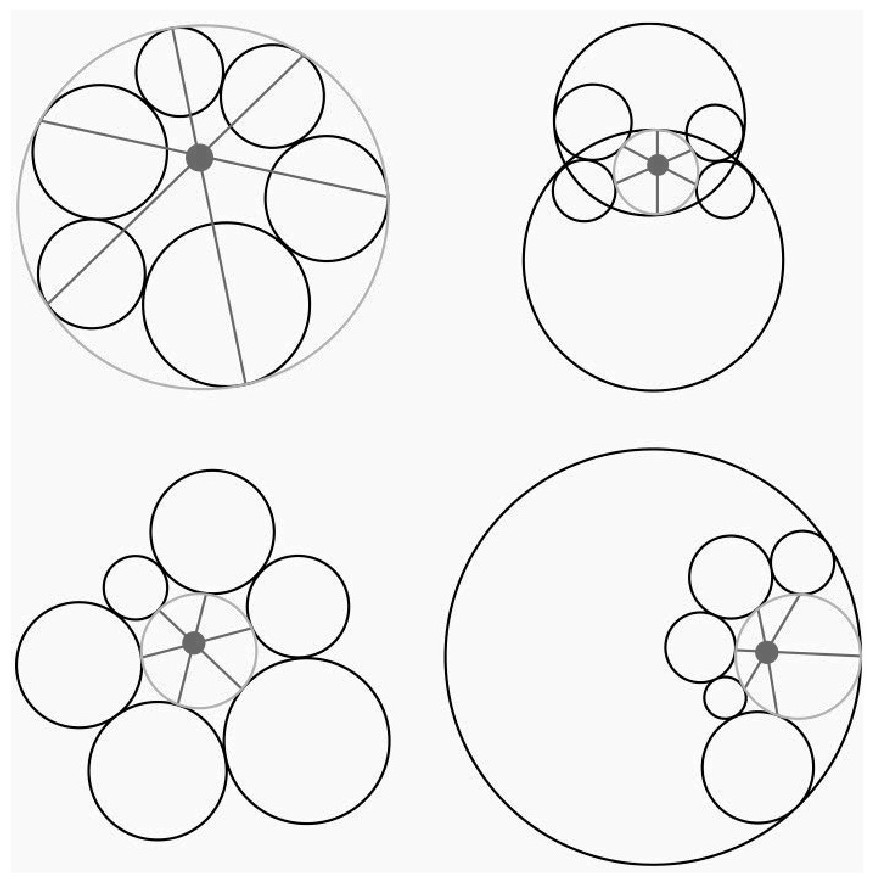
图7.1 七圆定理
当6个圆位于原来的圆的外部时，七圆定理有一个有趣的特例。让其中间隔的3个圆的半径趋向无穷大（这会将这些圆变成直线），另3个圆的半径相应缩短，就可以形成与三角形的内切圆有关的一个结论。
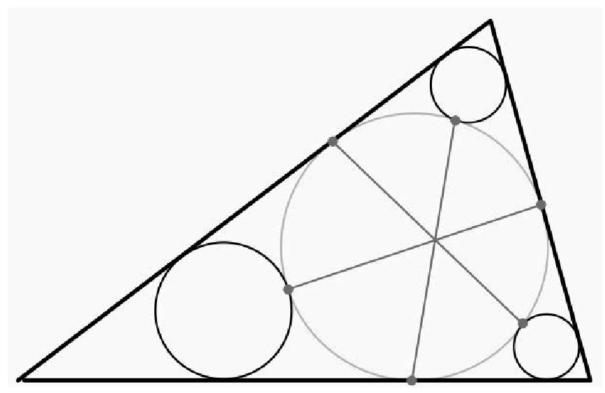
图7.2 三角形中的圆
1/7的小数位和椭圆
7引人注意的一个特点是它的倒数：
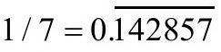
。对任何n≥2的整数，1/n的十进制展开的周期长度最多为n-1。如果某个素数p达到了这个最大周期，就称为长素数、黄金素数或最大周期素数。7是最小的长素数。你可能会认为长素数很少，其实并不少。即便是小数字，要找长素数也不用纵横七海，前面几个长素数是7、17、19、23、29和47。事实上，据猜测有37.4%的素数都是长素数。阿廷常数对长素数的比例给出了更精确的猜想，其中连乘是针对所有素数p。不要被这么多数位吓住，我们可以欣赏一下数位中的规律。对于新手，可以看到
对所有这些分数，数位的长度都保持不变。
不过更有趣的是，这些数位可以用来构造特殊的椭圆。椭圆方程的通用形式是Ax2+Bxy+Cy2+Dx+Ey+F=0。因为方程可以缩放，所以还有5个自由度，也就意味着通常有一个椭圆会穿过5个点的集合。“通常”一词是用来规避包含以下6个点的椭圆：（1，4）、（4，2）、（2，8）、（8，5）、（5，7）和（7，1），这7个点是取自1/7的重复数位。这个椭圆被称为七分之一椭圆，它的方程是
更让人难以置信的是，用点（14，28）、（42，85）、（28，57）、（85，71）、（57，14）和（71，42）还可以构造一个椭圆（图7.3）。它的方程是
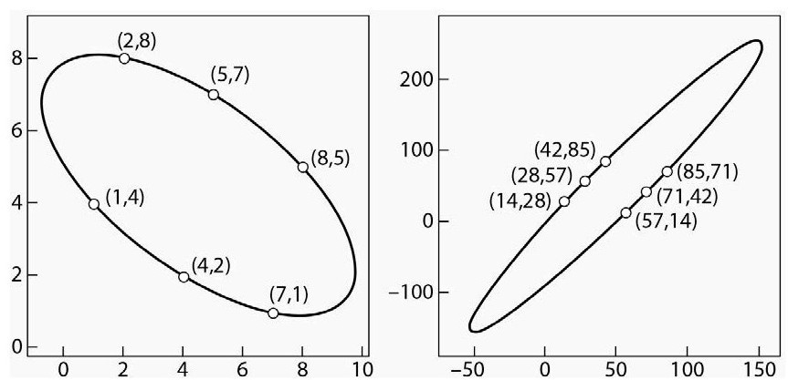
图7.3 两个七分之一椭圆
斯特拉森矩阵乘法
矩阵相乘是矩阵代数中最常用的计算。例如，2×2的旋转矩阵在计算机图形学中经常用到。每个学生都会学到，如果A和B定义为
则它们的乘积为
可以看到要计算AB，需要进行8次乘法和4次加法。由于乘法比加法需要耗费更多计算资源，因此减少乘法会很有意义，即便会多出几次加法也没关系。这种改进由斯特拉森在1969年提出，现在被称为斯特拉森乘法。定义7个新的项，每一项刚好涉及一次乘法：
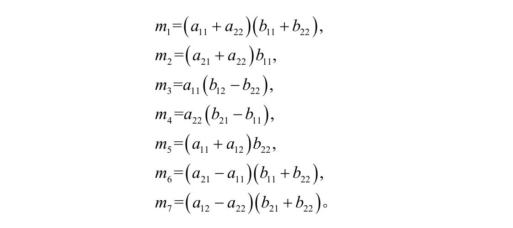
这样矩阵C的项就能这样计算
有了这些中间项，就能通过7次乘法和18次加减法计算乘积AB。
斯特拉森乘法不限于2×2矩阵。如果两个矩阵的大小为2n×2n，则每个矩阵都可以分为4个2n-1×2n-1块。仍然可以应用斯特拉森乘法，不过不是针对4个数，而是这4块。事实上，这个过程可以递归应用于每一块，从而进一步减少乘法数量。如果是两个N×N的矩阵相乘，可以将乘法的数量从大约N3减少为
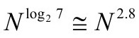
。对于乘法与加法的计算成本差不多的CPU架构，斯特拉森乘法只在矩阵很大时才会有效用，而且斯特拉森乘法所需的内存数量明显高于标准方法，因此采用这种方法时必须小心。
费诺平面
当说到“几何”时，许多人会想到平面上的几何（线、点、圆、矩形等）或三维结构，具有物理学思维的人会想到4维空间，其中加入了表示时间的维度。数学家以许多方式扩展了几何的概念，一个简单的分支是有限几何，研究的是只包含有限个点的几何场景。计算机屏幕上就只有有限个点，宇宙中也只有有限个粒子，这也许会让你认识到这个概念并不是不切实际。
让我们把注意力集中在射影空间，几何的常见规则被改变得更厉害，这种空间中的“直线”不一定是直的，但仍然将点连到一起。我们对这种空间的规定如下：
请注意第二条违反了我们对平行线的认识。当然，艺术家们在几个世纪前就将这个概念用于透视画法。最简单的有限投影空间的例子是费诺平面（图7.4）。它包含7个点和7条“直线”，每条线上有3个点，每个点穿过3条线（圆也是一条“直线”）。
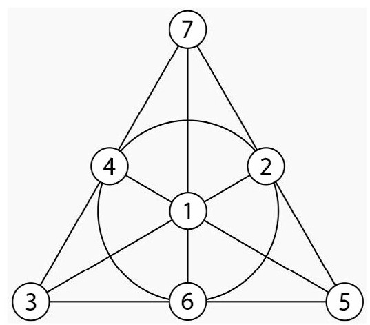
图7.4 费诺平面
费诺平面上的这7个点可以表示为7个非零的3位二进制数，这些数的位置不是偶然的，通过取任意两点，共线的第3点可以通过将两个数相加同时按位与2取模得到。这个过程可以视为忽略进位的二进制加法。以共线的3、5、6为例，将其中任意两个数的二进制数相加并忽略进位，都能得到第3个数。
费诺平面的7条直线可以用7个非零的3位二进制数进行区分。方法是选取与直线上的每个数进行点乘然后与2取模结果为零的唯一三元组[（a,b，c）与（d,e，f）的点乘写作（a,b，c）·（d,e，f），结果为ad+be+cf]。例如，包含3、4、7的直线记为二进制数011，因为
费诺平面一个有意思的应用是特兰西瓦尼亚彩票。对每张彩票，玩家在1到14之间选3个数，抽奖也是在1到14之间选3个数。如果猜中了至少2个数，彩票就赢了。一个基本问题是，在所有的
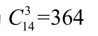
种可能中，至少选多少张彩票才能保证赢？答案是14。下面就是能赢的彩票数字：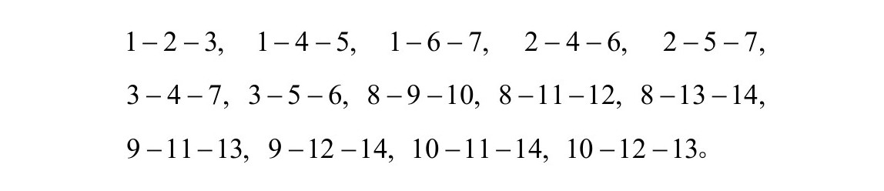
不难发现每一对数都出现在其中一张彩票上。根据鸽笼原理，抽取的3个数要么有两个数是小数字（1到7），要么有两个数是大数字（8到14）。前面7张彩票包含了任意小数字对刚好一次，后面7张彩票包含了任意大数字对刚好一次。为什么这个方法有效？请注意费诺平面上的每一对点都有一条直线通过。对于小数字，我们只需选择与这7条线对应的三元组，将小数字彩票上的每个数加7，就得到了7张大数字彩票。这14个三元组覆盖每种数字对刚好一次。
边线花纹
在油漆了餐厅后，你的搭档问你如何处理天花板的边线。这种边线通常是周期性的，以固定的间隔不断重复。在线搜索了许多花纹后，你注意到，除了重复的对称性，一些花纹还有其他对称性。事实上，所有花纹都可以分为7种可能中的一种。这些花纹被称为饰带群。表7.1描绘了这7种通用花纹。
表7.1饰带花纹
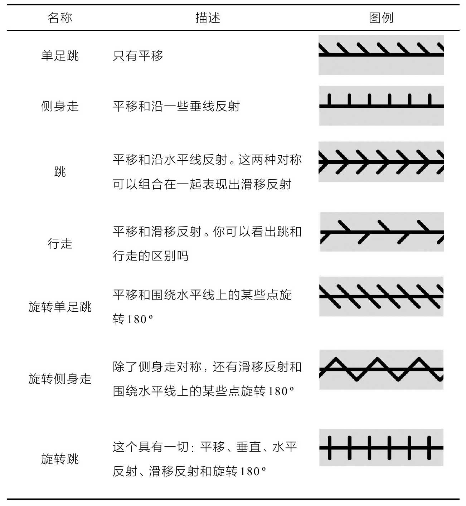
希洛西七面体和希伍德图
球和正四面体有何共同之处？显然，球是平滑表面，正四面体则是有4个面的多面体。不过，从拓扑的观点看，两者是一样的。球——想象成一团橡皮泥——不用掰开或挖洞就能捏成四面体。
我们能对环面做同样的操作吗？也就是说，有没有多面体和环面具有相同的拓扑？有很多种可能，但哪种的面最少呢？1977年，劳约什·希洛西发现了一种与环面拓扑等价的七面体（图7.5）。希洛西七面体具有7个面、14个点和21条边，有意思的是，每个面都与其他所有面共边，除此之外唯一具有这种特性的多面体就只有四面体了。
表示这种多面体的图被称为希伍德图。要从这个正方形得到环面，首先将左右两边卷起来形成一根垂直的管子（你应当可以看出两边的图案对得上），然后弯曲管子，将两条圆环边黏在一起。显然，这个图与希洛西七面体有相同数量的点、面和边。不过嵌在环面上时却没有交错。这个图的发现者培西·希伍德在1890年证明了，环面无论怎样划分成多面体，多面体都可以用最多7种颜色着色。由于希伍德图需要7种颜色（图7.5），这也证明了希伍德定理无法再改进。取希伍德图的对偶，可以发现另一种与环面具有相同拓扑的多面体。这种多面体由另一位匈牙利数学家阿科斯·恰萨尔在1949年发现，恰萨尔多面体具有7个点、21条边和14个三角形面。
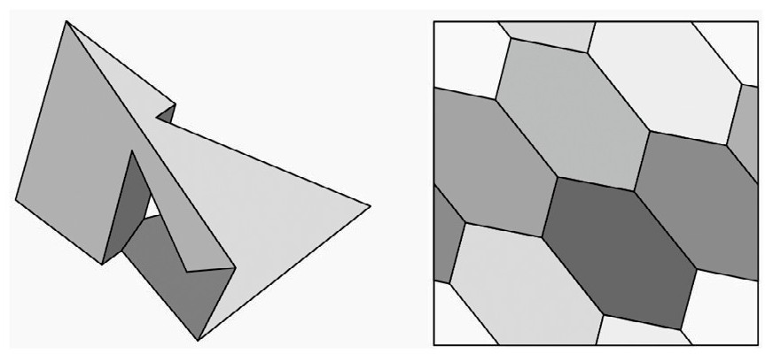
图7.5 希洛西七面体和希伍德图
1890年，早在证明四色定理之前，希伍德就开始思考嵌在有g个洞的环面上的图的着色问题。他证明有g个洞的曲面上的所有图所需的最少颜色数量是
环面是g=1的特例。
库拉托夫斯基十四集定理
设S是实数轴的子集。我们想知道，如果交替进行闭和补两种操作，可以构造出多少不同的集合。什么意思呢？集合S的补指的是实数轴上所有不属于S的点。闭的概念则有点复杂。我们来看一个例子。设S=[0，1）是0≤x＜1的点x组成的集合。点序列0.9，0.99，0.999，……，都属于S，可以无限逼近点1，但x=1不属于S。这意味着x=1是集合S的极限点。我们可以沿另一个方向定义点序列0.1，0.01，0.001，……，无限逼近x=0，但由于0属于S，因此0不是S的极限点。那集合的闭是什么意思呢？它是集合S加上它所有的极限点构成的集合，因此[0，1）的闭是[0，1]。
现在回到用闭和补构造新集合的问题。不难看出S的补的补就是S，重复的补操作就好像在屏幕上的两个窗口间来回切换。而闭的操作不那么明显，但可以相信的是，一旦进行了S的闭的操作，再进行闭操作不会增加新的点。也就是说，如果你把集合的极限点加入集合中，再进行闭操作不会增加新的点。用c表示闭操作，k表示补操作，可以得到
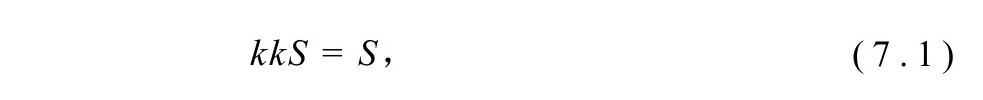
和
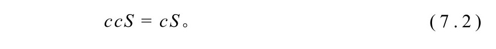
有了这两个等式，用闭和补操作构造新集合的唯一途径就只能是对S交替应用c和k操作。当然，这个可以无限继续，不过我们还有另一个有用的等式：ckcS=ckckckcS。这个解释起来比闭更加困难。集合的内部，记为iS，可以（不严格地）认为是集合S减去其边界点，这可以形式化地定义为iS=kckS。例如，[0，1）的内部是（0，1），点x=0被去掉。由于集合ckcS的内部包含在集合自身，因此有kckckcS ckcS⊆。两边进行闭操作，并利用cc=c，可以得到ckckckcS ckcS⊆。另一方面，kckcS cS⊆，因为kckcS是cS的闭。因此有ckckcS cS⊆，kckckcS kcS⊇和ckckckcS ckcS⊇。从而可得
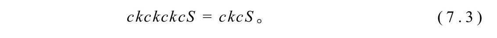
利用式（7.1）-（7.3）可以证明，从S出发最多可以构造出14种不同的可能集合：
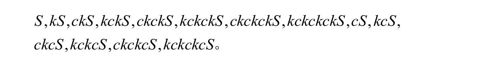
注意c和k最多的应用次数是7。这个结果于1922年被证明，被称为库拉托夫斯基十四集定理。
还有一个问题没有解决。前面的推理证明最多能构造14个不同的集合。有没有这14个集合都不同的例子？毕竟，一些集合可能会相同。例如，如果从S=[0，1）∪[2，3）开始，我们发现只有6种可能集合：
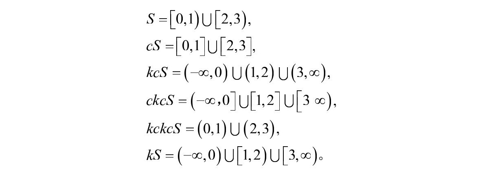
要让所有14个集合都不同，需要一个发烧友级的集合S。你能找到吗？答案见第10章。
你能听出鼓的形状吗？
母亲如何分辨自己孩子的声音？乐队指挥如何分辨乐团的乐器声？被捕食的动物如何分辨丛林中的危险？答案是每种声音都有自己独有的特征。是这样吗？1966年，数学家马克·凯克想知道两种不同形状的鼓面是否可以通过声音分辨。
鼓面振动产生声音，振动可以分解成不同成分——它们被称为调式——每种振动都有自己的频率，这个频率的集合被称为鼓的频谱。调式和频率可以用偏微分方程建模。如果D是鼓面的形状，亥姆霍兹方程
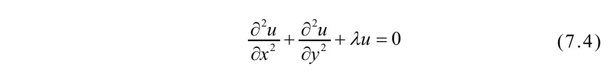
的解u=u（x,y）就是振动的调式。
频率用希腊字母λ表示，函数u（x,y）表示鼓面相对其平衡位置的高度。由于鼓面被钉在鼓的周沿，因此有u=0。
数学上最简单的情形是区域D为正方形。在这种特定的场景下，可以用三角函数给出具体的调式（更复杂的鼓面通常无法给出封闭形式的表示）。设正方形的边长为1，可以用函数sin（mπx）sin（nπy）给出一些调式，其中m和n是正整数。沿着4条边线—x=0，x=1，y=0或y=1—调式等于0。利用式（7.4）可以求出频率λ等于π2（m2+n2）。图7.6给出了一个例子。请注意相同频率可能有两种不同的调式。例如，当（m,n）=（1，8）、（8，1）、（4，7）和（7，4），都会产生频率65π2。相同频率的调式可以组合产生新的调式（都具有相同频率）。
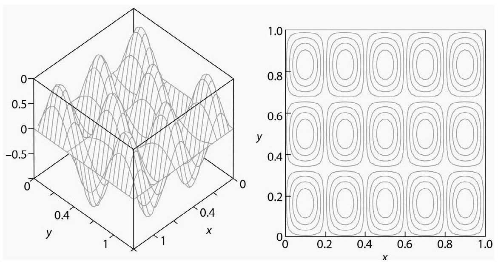
图7.6 振动的调式和等高线图，m=5，n=3
在尝试将不同的调式可视化时，德国物理学家恩斯特·克拉德尼（1756—1827，被称为“声学之父”），研究了金属薄板的振动。在金属板边沿上拉小提琴弓，让薄板进入共振。对于大多数调式，正方形区域内部有一些地方的调式高度始终等于0。这些“死点”组成的曲线被称为波节线，波节线以外的点会上下振动。克拉德尼在驱动薄板之前在板上撒了一层沙子，当板子被驱动进入共振时，沙子会在板子上跳动，并移动到波节线上，因为波节线不动。这个过程会展示出漂亮的波节线花纹（图7.7）。
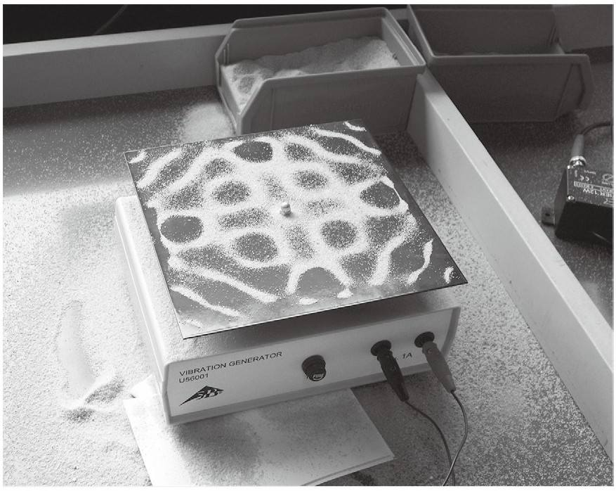
图7.7 振动的板子上沙子形成的花纹
现在回到凯克的问题，他问的其实是：“两个不同形状的鼓面会有相同的频谱吗？”如果有，我们就说这两个形状是等谱。数学分析证明等谱形状必定在某些方面是一样的，包括具有相同的面积和周长。由于频谱是无穷尽的——有无穷多泛音——因此等谱形状具有无穷多种共性。可以合理地推测所有这些共性会使得两种不同的形状无法等谱。毕竟，如果看上去像鸭子，叫起来像鸭子，飞起来像鸭子，那就应当是鸭子，难道不是吗？让人吃惊的是，答案是否定的。
1992年，卡洛琳·戈登、大卫·韦伯和斯科特·沃伯特证明了存在等谱形状。他们的证明使用了高级数学工具，并且依赖砂田定理，这个定理给出的条件能确保两个形状是等谱的。图7.8是他们给出的一个具体例子，可以看到每个形状是由7个全等的直角三角形拼贴而成的，这不是巧合，其他研究者进一步研究了这个例子，并且发展出了用一种形状的调式构造另一种形状的调式的相对简单的程序。这个方法能起作用是因为7个三角形以一种类似费诺平面上7个点的方式连接。事实上，其他等谱形状可以通过与其他投影空间的连接相匹配来构建，于是，一些抽象代数结构的特性可以用来回答似乎毫不相干的声学问题。
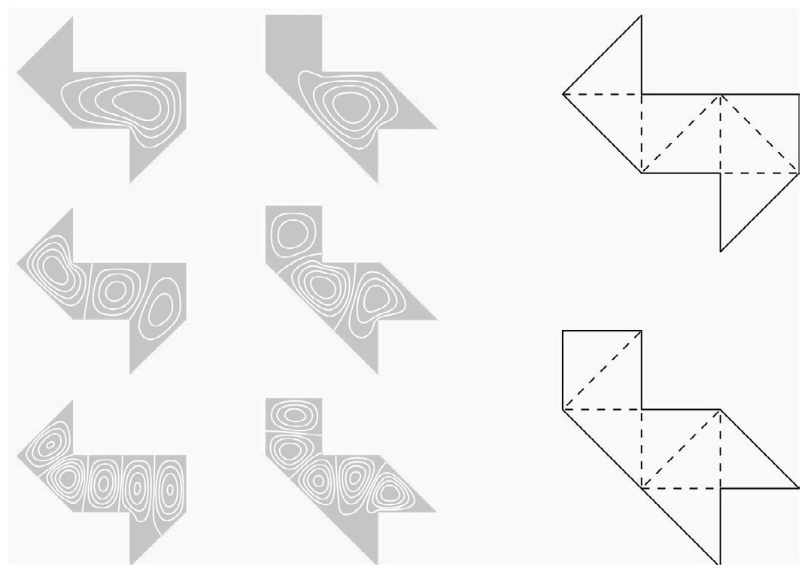
图7.8 两种等谱形状的振动调式及分解为7个全等三角形
巴克码
假设有两台设备发送相同的信号，但是人们担心会不同步。要检验这一点，最好是有某个简单的测试能对同步和不同步信号进行标记，这时巴克码就可以派上用场了。巴克码由+1和-1组成，如果编码有n项，则编码{aj}移k位后的自相关函数定义为
例如，如果编码为a1=1，a2=1，a3=-1，a4=1，则
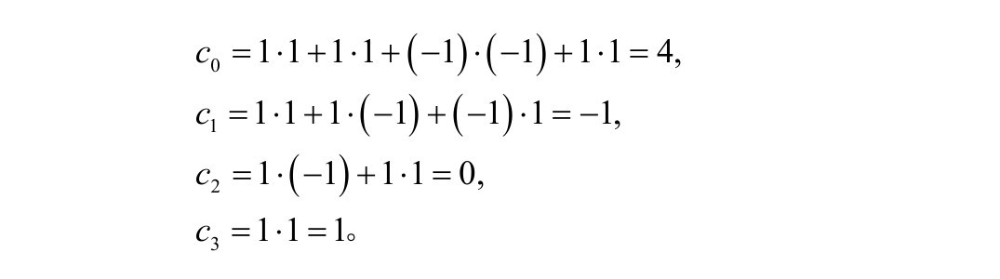
注意到自相关峰值（k=0）为4，自相关非峰值（k＞0）为-1、0和1。这是巴克码的一个例子：自相关峰值等于n，非峰值则位于集合{-1，0，1}。由于巴克码的自相关峰值和非峰值之间有剧烈变化，因此对于两个信号是否同步能够给出很强的证据。
例子中给出的巴克码可以记为{++−+}，还可以构造出哪些巴克码呢？注意到巴克码可以转化生成其他巴克码，通过求和操作可以证明，如果{ak}是长度为n的巴克码，则{-ak}、{an-1-k}和{（-1）kak}也是。不考虑这些的话，已知的巴克码只有7个（表7.2）。
表7.2 7个已知的巴克码
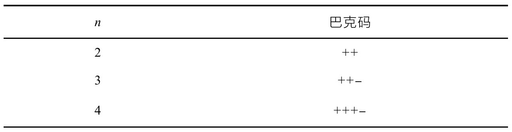
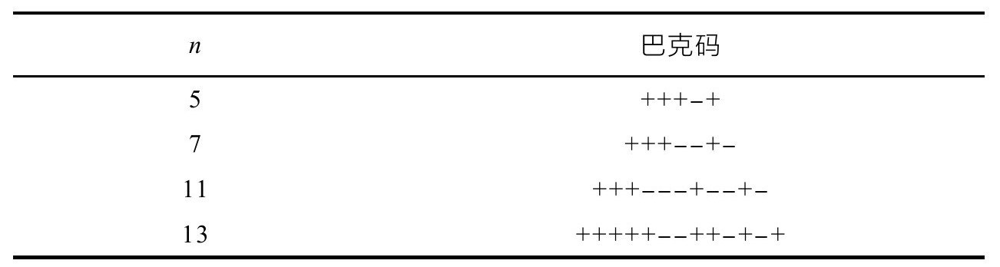
已经证明n为奇数的巴克码都已经找到了，但是不知道是不是还有更多的n为偶数的巴克码。如果还存在其他巴克码，理论和数值研究已经证明了n＞2·1030。除此之外还有一种可能：
n=189 260 468 001 034 441 522 766 781 604.
趣味数学
这本书拒绝选用那些与数有关但没有实质数学关联的事实。有时候一些谜题或游戏与数学——通常是算术——有一些肤浅的关联，但是缺乏深刻的理论支撑。数学家通常会看不起这种思维练习，认为两者之间的差别就好比枪战追逐剧与奥斯卡级别的艺术创作的差别。当然趣味数学本身的部分目的就是找乐子——不然怎么叫趣味呢？——而且就算最好的数学家也会承认一开始用来好玩的东西也有可能演化成某种相当复杂（同时仍然还有趣）的东西。
例如古老的童谣，《在去圣艾维斯的路上》：
这个童谣可以当作几何级数问题的启蒙。数学中有许多这种从玩乐性质的探索发展丰富为研究领域的例子：机遇游戏发展为概率论，康威的生命游戏（第8章介绍）推动了元胞自动机的发展。甚至微积分的共同发明者莱布尼茨，在1715年的一封信中都写道，“没有比发明游戏更能体现人的天赋的了”。欧拉研究了哥尼斯堡七桥问题：有没有可能经过每座桥刚好一次（图7.9）？这个简单的问题发展成了图论研究。
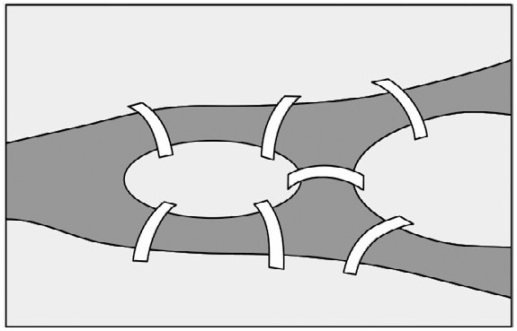
图7.9 哥尼斯堡七桥问题
作为趣味数学的最后一曲，思考一个与7次幂有关的有趣等式：
你能找到其他幂的类似等式吗？提示：尝试3次幂。答案在第10章。
积分实验
构造一个定理的形式化证明可能完全不同于定理的发现过程，数学家对于简洁美观的证明很得意，但有时候其中的过程漫长而曲折，让人不堪回首。在发表的文章中，通常只会给出高度精简的证明，让读者体会不到结果最初是如何构想出来的。大多数数学家都会同意好的证明应该简洁，但人们会奇怪为何为了简洁的名义就要牺牲掉事物的清晰。即便“数学王子”高斯也痛恨自己的发现过程的繁杂。阿贝尔说：“他[高斯]就像一只狐狸，用尾巴扫沙子将自己的足迹掩埋起来（Simmons，Calculus Gems，p.177）。”高斯为自己的风格辩护，说“有自尊心的建筑师不会在建筑完工之后留下脚手架”。
在实践中，许多数学家在尝试猜想时都会进行大量实验，他们的伟大思想并不是无中生有，沉浸在一个问题中时往往是不断拨弄数字培养皿。实验数学的新兴模式是用计算机代数系统研究新的现象，高效利用计算机帮助人们猜想、验证和证否，甚至偶尔会证明数学命题。就连高斯也承认他的研究方法是“通过系统性实验”（《实验数学》期刊的《哲学和发表原则申明》）。计算机出现以后，研究者们与数值和符号软件结合得越来越紧密了。
通过实验数学已经发现了许多有意思的结果。式（2.1）（第2章）的BBP级数就是用数值和符号方法相结合生成具有新性质的公式的漂亮例子。不过需要磨炼自己的细心，有些很明显的模式到最后却是虚妄。考虑积分
函数sinx/x，有时候也称为sinc函数，在数字信号处理中扮演了重要角色。一些类似的积分都有相同的值：
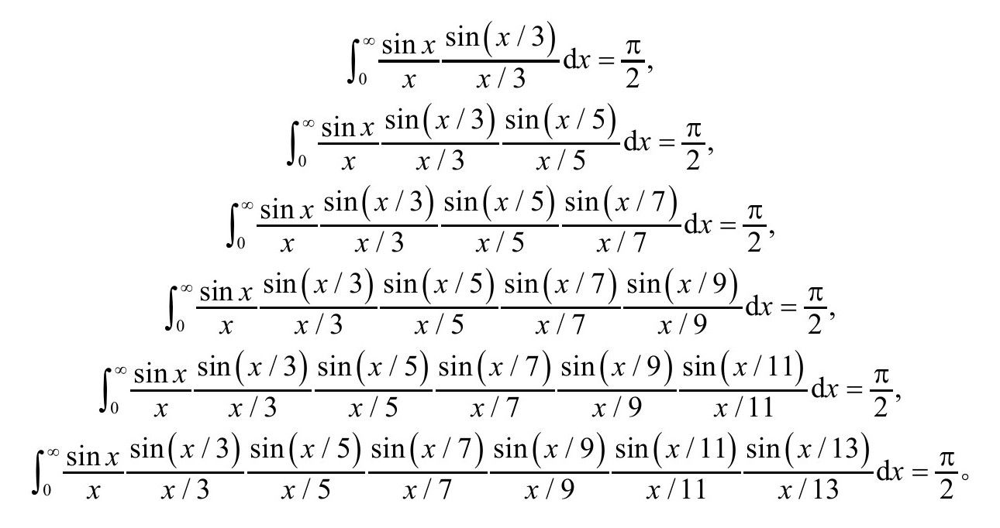
人们忍不住会猜测这7个积分属于一种普适性的模式。然而，计算机对下一个积分给出了不同值：
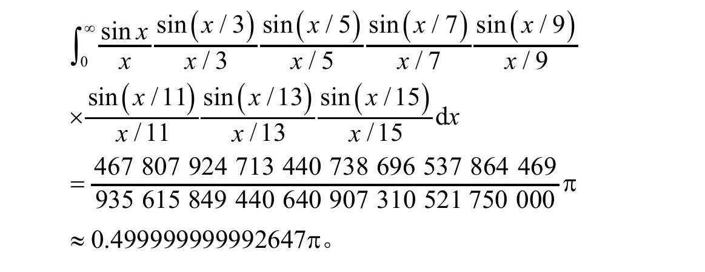
发现这个事实的研究者怀疑是不是程序有错误，然而事实是积分是正确的。这个变化的解释有一点专业性，不过关键原因是
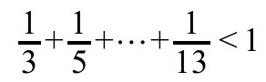
，而如果再加下一项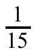
，求和结果就会超过1，从而使得积分的值变得不一样。这个例子警醒我们不要太快、太草率地下结论。有一句话据说是著名经济学家凯恩斯说的：“如果事实改变了，我就改变我的想法。你会怎样做呢，先生？”